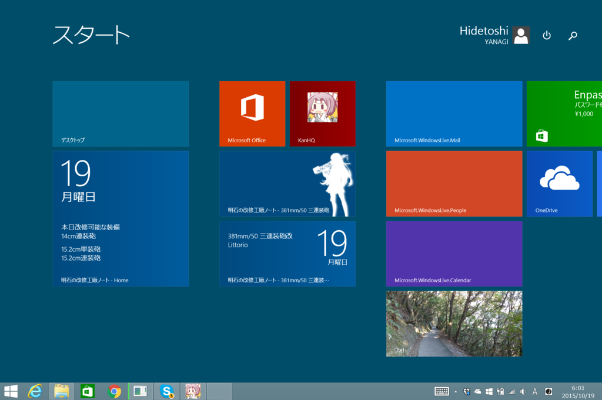

Web サイトのピン止め
公開日：

週末は具合が悪かったので（また今度書くけど、小康状態になるや ARIA 劇場版観に行ったらまたおかしくなった）、日曜日はお布団でこの前作ったサイトにライブタイルを実装して遊んでいた。
工廠で今日改修できる装備なんかがチェックできるようになって満足（装備ページをピン止めするとその日にその装備が改修できる艦娘がタイル表示される。艦娘のページをピン止めすると、その艦娘がその日に改修できる装備がリストアップされる）。簡素ながら、ちゃんとイメージも用意してみた。
ちょうど一年前、そういうことをして遊んでいたことがあったらしく、そのときのメモがちょっと役に立った。でも、pollong-uri は5つまでっていうのは今回初めて知ったかも。ドキュメントってキッチリ書いてあっても、なぜか知りたいことが書いてなかったりするよな。書いてあってもそれと気付かなかったり。不思議なものだ。
それにしても、ピン止めサイトの実装は面倒だ。
最大の難関はデバッグ。環境によって動いたり、一度ミスをするとキャッシュが残っているのか、挙動がおかしくなったりする。おかげで3台の PC を使ってピン止めしたり外していたりしていたのだけど、どうも Windows 8.x ではちゃんと動くのに、Windows 10 ではちゃんと動かないことがあるようだ（同じサイトをピン止めしているのに Windows 10 側だけ更新されないことがある）。ライブタイルはエラーが発生すると更新されないだけで、なんのエラーメッセージも出してくれないから、手探りでいろいろ試してみるものの、先述のキャッシュか何かの関係もからんで問題がよけい悪化する。
こういうのはほんと疲れる。すでに推奨しない機能なら、そう言ってくれれば使おうとは思わないのに。
正直なところピン止めサイトはあまり流行っていないようだが、それはわかる。必要なものでもなければ、とくに利便性が著しく向上するというたぐいのものではない。対応していればほかのサイトよりクールで、［スタート］に特別な場所を占めることができるチャンスがあるといった程度のシロモノに過ぎず、まぁ、流行らないからといっても驚くべきものでもないだろう。しかし、それ以上に実装とデバッグの面倒くささというのが普及の障害になっているのではないかと思った。実装が簡単な OPG や Twitter Card はたいした利便性もないのにこれだけ普及するわけで。バリデーションサービスなんかもあるしね。ピン止めサイトも OPG に動的要素を追加提案する形で相乗りすればいいんじゃないかと思った。